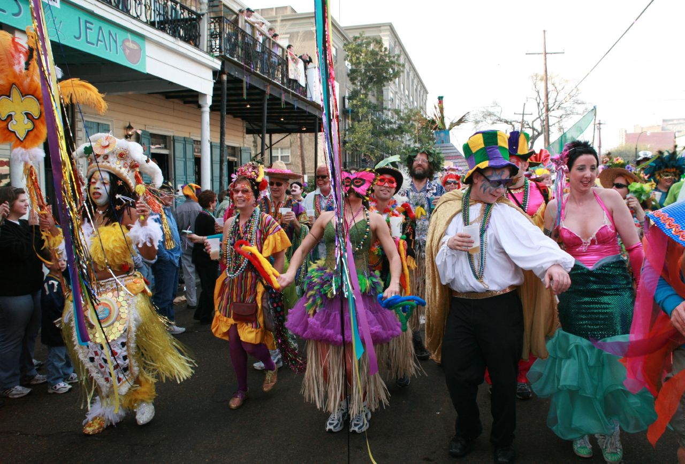
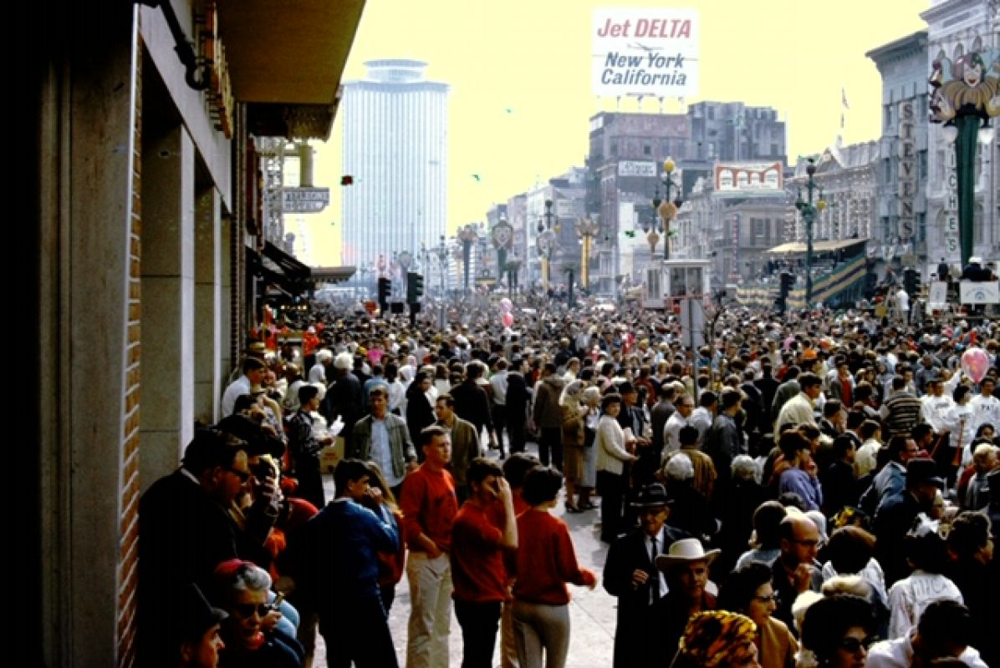
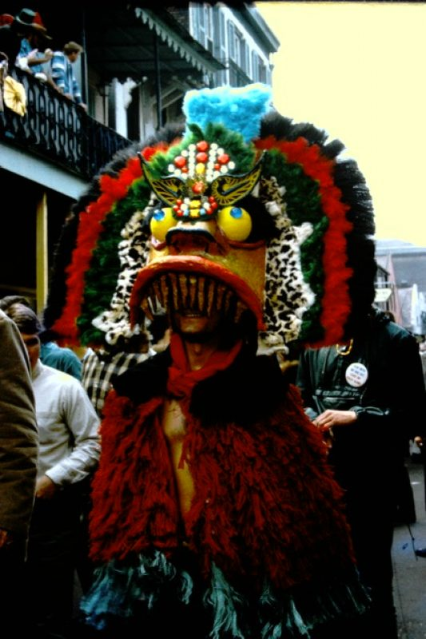

To get the feeling of Mardi Gras year-round, visit Mardi Gras World, the largest
float
designing and building facility in the world. Here more than 80 percent of the floats that journey
down
New Orleans' streets during the Carnival season are designed and built.
Begun in 1947 by float designer and builder Blaine Kern, Mardi Gras World provides visitors with the
opportunity to don authentic Mardi Gras costumes and tour enormous warehouses filled with floats.
The
tour includes a short video and guide who is quite knowledgeable about Mardi Gras history and
customs.
And for a taste of Mardi Gras, king cake and piping hot New Orleans coffee are served.
During the tour, visitors learn about the many traditions surrounding Mardi Gras parades, balls and
music, as well as the intricacies of float designing and building. Mardi Gras floats began rumbling
down
New Orleans streets in 1837 with mule-drawn carriages. Today the tradition continues with
sophisticated
mega-floats, which hold more than 200 masked riders and are lit with fiber optic cables and laser
lights.
LaToya Cantrell, is the current Mayor of the city of New Orleans.
LaToya Cantrell (born April 3, 1972) is an American politician serving as the Mayor of New
Orleans, Louisiana, a post she has held since May 7, 2018. Cantrell, a Democrat, is the first
woman to hold the post. Before becoming mayor, Cantrell represented District B on the New
Orleans City Council from 2012–2018.
Cantrell was inaugurated as mayor on May 7, 2018, the first woman to hold the position in the
city's history. Once in office, she established a new Office of Youth and Families, with the
goal of creating a strategic plan to address families in crisis in the city. Cantrell also
founded a Gun Violence Reduction Council tasked with finding solutions to violent crime.
Starting with a push to rededicate hotel taxes collected within the city for city use, Cantrell
has focused on her #fairshare initiative to improve city infrastructure, public transportation,
public parks, and green spaces. As part of that initiative, in October 2018 the City of New
Orleans filed a lawsuit against four opioid manufacturers and distributors.
During the 2019 session of the Louisiana Legislature, Cantrell negotiated the Fair Share
Agreement with Governor John Bel Edwards and city, state, and tourism officials. The agreement
secured $50 million in upfront funding for the city's infrastructure needs as well as $26
million in annual recurring revenue for the city.
Following the approval of the Fair Share
Agreement, New Orleans voters approved three of the four proposals Mayor Cantrell and the City
Council put on the ballot in the 2019 general election. Voters approved a $500 million bond sale
and a tax on short-term rental properties, as well the establishment of a Human Right Commission
under the New Orleans Home Rule Charter.
For more info about LaToya, please visit her Wikipedia page.

The holiday of Mardi Gras is celebrated in all of Louisiana, including the city of
New Orleans. Celebrations are concentrated for about two weeks before and through Shrove Tuesday,
the day before Ash Wednesday (the start of lent in the Western Christian tradition). Usually there
is one major parade each day (weather permitting); many days have several large parades. The largest
and most elaborate parades take place the last five days of the Mardi Gras season. In the final
week, many events occur throughout New Orleans and surrounding communities, including parades and
balls (some of them masquerade balls).
The parades in New Orleans are organized by social clubs known as krewes; most follow the same
parade schedule and route each year. The earliest-established krewes were the Mistick Krewe of
Comus, the earliest, Rex, the Knights of Momus and the Krewe of Proteus. Several modern "super
krewes" are well known for holding large parades and events, such as the Krewe of Endymion (which is
best known for naming celebrities as grand marshals for their parades), the Krewe of Bacchus
(similarly known for naming celebrities as their Kings), as well as the Zulu Social Aid & Pleasure
Club—a predominantly African American krewe. Float riders traditionally toss throws into the crowds.
The most common throws are strings of colorful plastic beads, doubloons, decorated plastic "throw
cups", Moon Pies, and small inexpensive toys. Major krewes follow the same parade schedule and route
each year.
While many tourists center their Carnival season activities on Bourbon Street, major parades
originate in the Uptown and Mid-City districts and follow a route along St. Charles Avenue and Canal
Street, on the upriver side of the French Quarter. Walking parades - most notably the Krewe du Vieux
and Chewbacchus - also take place downtown in the Faubourg Marigny and French Quarter in the
weekends preceding Mardi Gras day. Mardi Gras day traditionally concludes with the "Meeting of the
Courts" between Rex and Comus.
In New Orleans, costumes and masks are seldom publicly worn by non-Krewe members on the days before Fat Tuesday (other than at parties), but are frequently worn on Mardi Gras. Laws against concealing one's identity with a mask are suspended for the day. Banks are closed, and some businesses and other places with security concerns (such as convenience stores) post signs asking people to remove their masks before entering.

The origins of Mardi Gras can be traced to medieval Europe, passing through
Rome and Venice in the 17th and 18th centuries to the French House of the Bourbons. From
here, the traditional revelry of "Boeuf Gras," or fatted calf, followed France to her
colonies.
On March 2, 1699, French-Canadian explorer Jean Baptiste Le Moyne Sieur de Bienville arrived
at a plot of ground 60 miles directly south of New Orleans, and named it "Pointe du Mardi
Gras" when his men realized it was the eve of the festive holiday. Bienville also
established "Fort Louis de la Louisiane" (which is now Mobile) in 1702. In 1703, the tiny
settlement of Fort Louis de la Mobile celebrated America's very first Mardi Gras.
In 1704, Mobile established a secret society (Masque de la Mobile), similar to those that
form our current Mardi Gras krewes. It lasted until 1709. In 1710, the "Boeuf Gras Society"
was formed and paraded from 1711 through 1861. The procession was held with a huge bull's
head pushed along on wheels by 16 men. Later, Rex would parade with an actual bull, draped
in white and signaling the coming Lenten meat fast. This occurred on Fat Tuesday.
New Orleans was established in 1718 by Bienville. By the 1730s, Mardi Gras was celebrated
openly in New Orleans, but not with the parades we know today. In the early 1740s,
Louisiana's governor, the Marquis de Vaudreuil, established elegant society balls, which
became the model for the New Orleans Mardi Gras balls of today.
The earliest reference to Mardi Gras "Carnival" appears in a 1781 report to the Spanish
colonial governing body. That year, the Perseverance Benevolent & Mutual Aid Association was
the first of hundreds of clubs and carnival organizations formed in New Orleans.
By the late 1830s, New Orleans held street processions of maskers with carriages and
horseback riders to celebrate Mardi Gras. Dazzling gaslight torches, or "flambeaux," lit the
way for the krewe's members and lent each event an exciting air of romance and festivity. In
1856, six young Mobile natives formed the Mistick Krewe of Comus, invoking John Milton's
hero Comus to represent their organization. Comus brought magic and mystery to New Orleans
with dazzling floats (known as tableaux cars) and masked balls. Krewe members remained
anonymous.
In 1870, Mardi Gras' second Krewe, the Twelfth Night Revelers, was formed. This is also the
first recorded account of Mardi Gras "throws."
Newspapers began to announce Mardi Gras events in advance, and they even printed "Carnival
Edition" lithographs of parades' fantastic float designs (after they rolled, of course -
themes and floats were always carefully guarded before the procession). At first, these
reproductions were small, and details could not be clearly seen. But beginning in 1886 with
Proteus' parade "Visions of Other Worlds," these chromolithographs could be produced in
full, saturated color, doing justice to the float and costume designs of Carlotta Bonnecase,
Charles Briton and B.A. Wikstrom. Each of these designers' work was brought to life by
talented Parisian paper-mache' artist Georges Soulie', who for 40 years was responsible for

creating all of Carnival's floats and processional outfits.
1872 was the year that a group of businessmen invented a King of Carnival, Rex, to preside
over the first daytime parade. To honor the visiting Russian Grand Duke Alexis Romanoff, the
businessmen introduced Romanoff's family colors of purple, green and gold as Carnival's
official colors. Purple stands for justice; gold for power; and green for faith. This was
also the Mardi Gras season that Carnival's improbable anthem, "If Ever I Cease to Love," was
cemented, due in part to the Duke's fondness for the tune.
The following year, floats began to be constructed entirely in New Orleans instead of
France, culminating with Comus' magnificent "The Missing Links to Darwin's Origin of
Species," in which exotic paper-mache' animal costumes served as the basis for Comus to mock
both Darwin's theory and local officials, including Governor Henry Warmoth. In 1875,
Governor Warmoth signed the "Mardi Gras Act," making Fat Tuesday a legal holiday in
Louisiana, which it still is.
Like Comus and the Twelfth Night Revelers, most Mardi Gras krewes today developed from private
social clubs with
restrictive membership policies. Since all of these parade organizations are completely funded by
their members, New
Orleanians call it the "Greatest Free Show on Earth!"